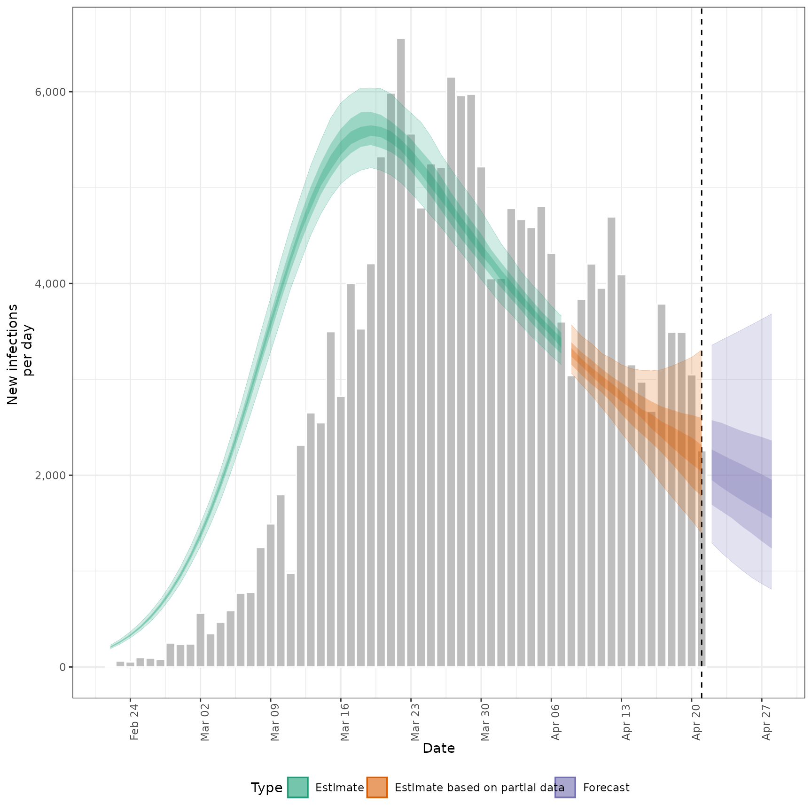
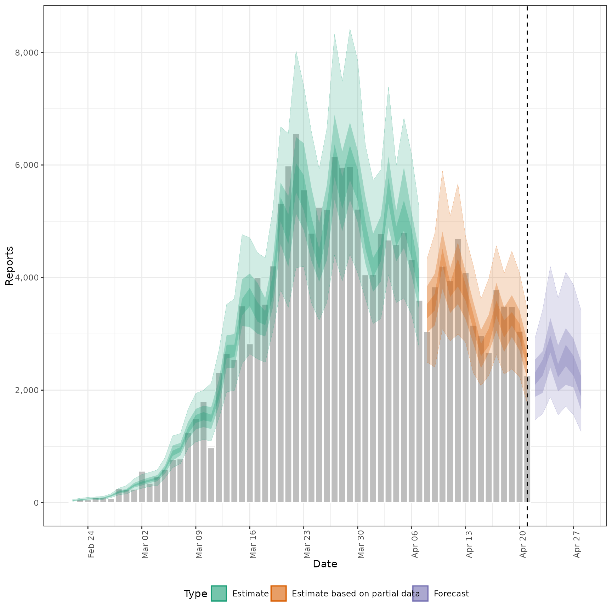
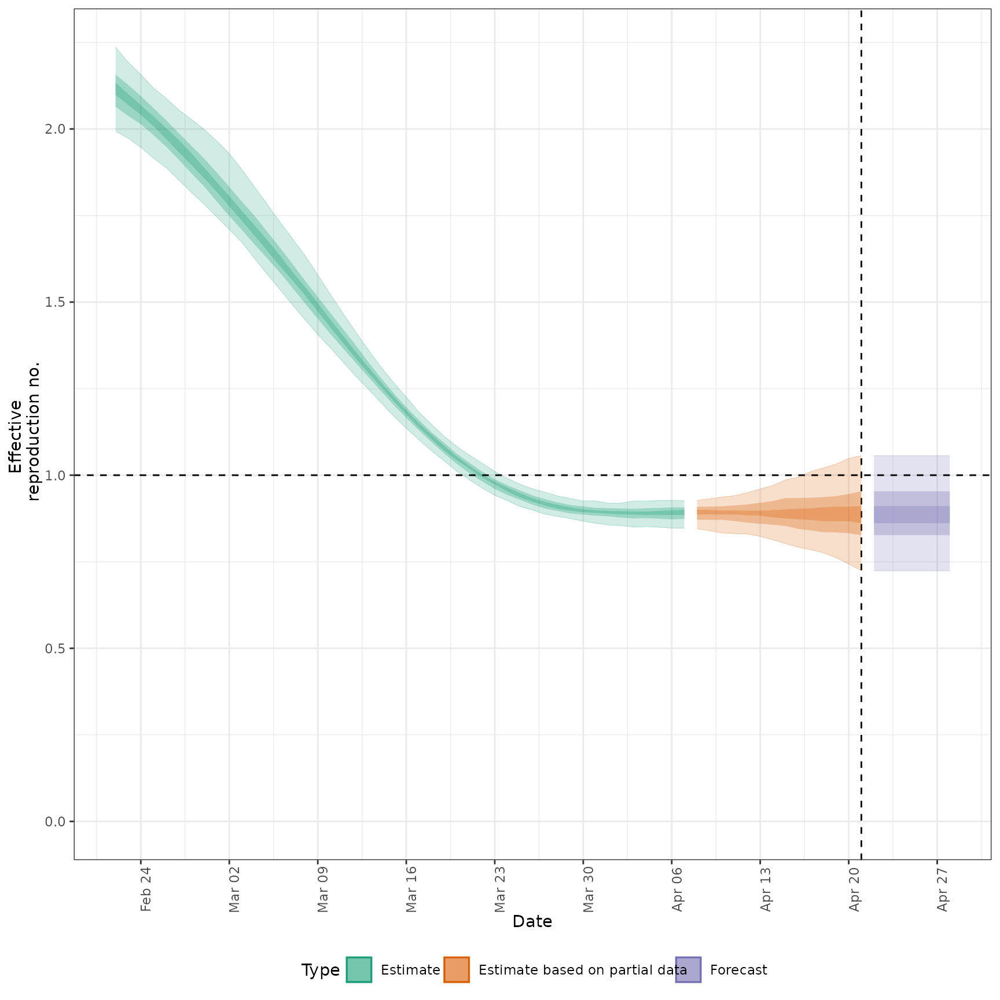
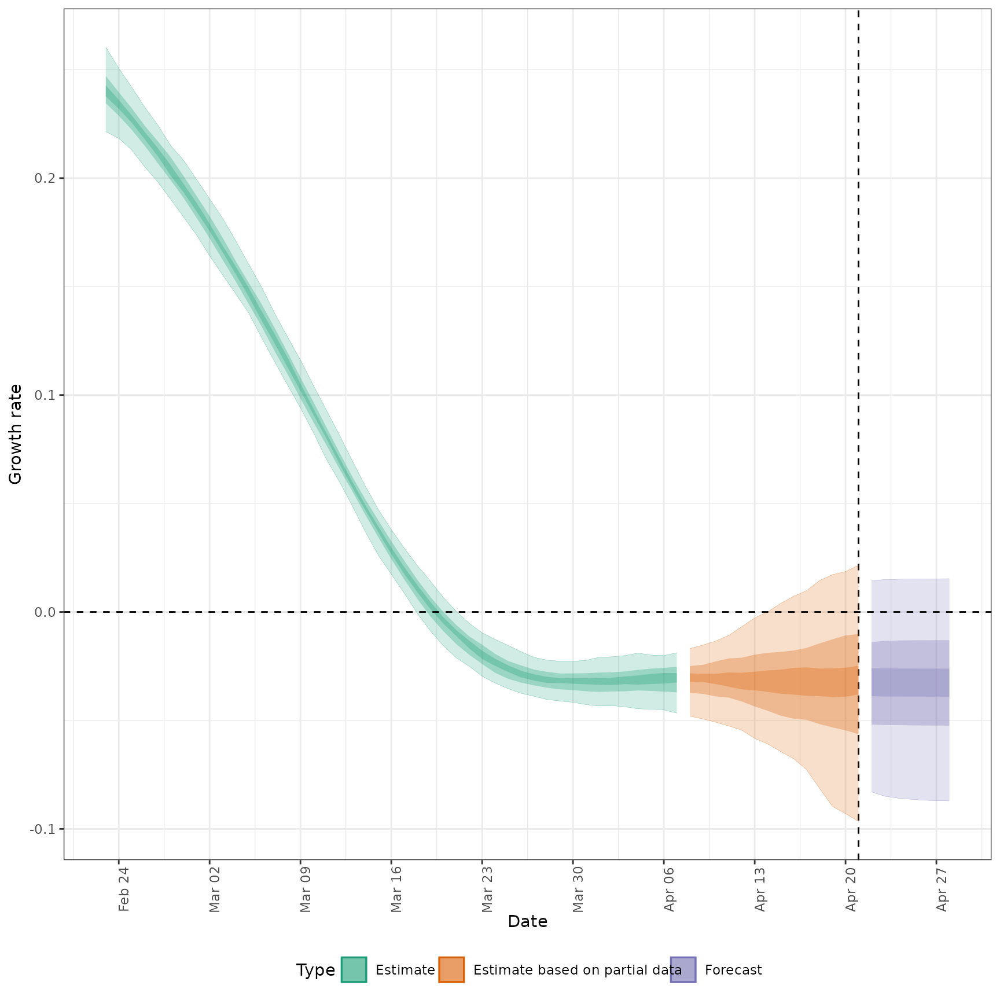
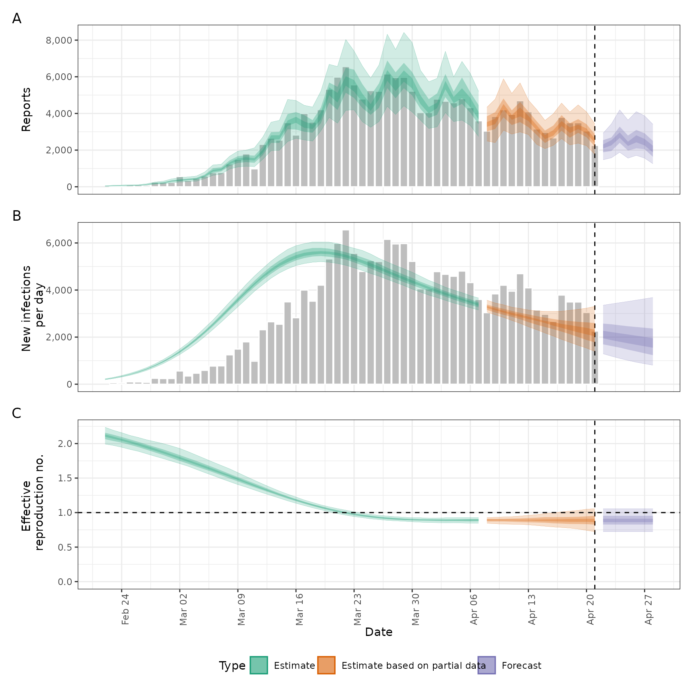

![[Questioning]](figures/lifecycle-questioning.svg) Returns key summary plots for estimates. May be depreciated in later
releases as current S3 methods are enhanced.
Returns key summary plots for estimates. May be depreciated in later
releases as current S3 methods are enhanced.
Arguments
- summarised_estimates
A data.table of summarised estimates containing the following variables: variable, median, bottom, and top.
It should also contain the following estimates: R, infections, reported_cases_rt, and r (rate of growth).
- reported
A
<data.table>of reported cases with the following variables: date, confirm.- target_folder
Character string specifying where to save results (will create if not present).
- ...
Additional arguments passed to
plot_estimates().
Value
A named list of ggplot2 objects, list(infections, reports, R, growth_rate, summary), which correspond to a summary combination (last
item) and for the leading items.
See also
summarised_estimates[variable == "infections"],
summarised_estimates[variable == "reported_cases"],
summarised_estimates[variable == "R"], and
summarised_estimates[variable == "growth_rate"], respectively.
Examples
# get example output form estimate_infections
out <- readRDS(system.file(
package = "EpiNow2", "extdata", "example_estimate_infections.rds"
))
# plot infections
plots <- report_plots(
summarised_estimates = summary(out, type = "parameters"),
reported = out$observations
)
plots
#> $infections

#>
#> $reports

#>
#> $R

#>
#> $growth_rate

#>
#> $summary

#>